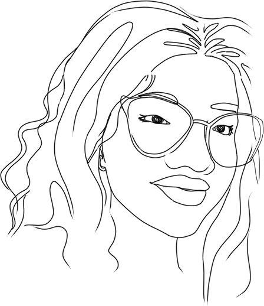
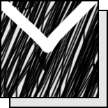

Coucou !
(Dis toi au moment où j’écris ça je suis encore dessus, il est minuit, et on est en examen, j’ai bien révisé le système embarqué vu qu’on dirait que t’es à l’aise sur cette matière alors je me dis que jsp pour t’impressionner je veux bien avoir des bonnes notes dessus mdrrr.. mais là en même temps mes pensées ne vont que vers toi, là j’hésite encore à t’expliquer la situation mais je ne pense pas que ce sera de si tôt.. je sens que depuis quelques temps t’es devenue distante avec moi, et je t’avoue ça me fait un peu peur, ça me brise le cœur que tu t’éloignes comme ça. Je ne sais pas ce que tu as mais je veux tout faire pour préserver notre amitié, je ne veux pas te perdre Rary, tu comptes beaucoup plus à mes yeux et ça plus que tu ne le penses.
Maintenant que j’y pense ce serait fou de ma part si je t’écrivais comme ça tout les jours hein mdrrr.. j’ai passé l’âge je pense... plus, we won't be able to tell the difference between the rest of the letter's drafting and the parenthetical remarks loool .. j’imagine aussi le cas où tu verra jamais cette lettre mais bon... ).
(Je pense trop souvent à toi tu sais, tu occupes les moindres recoins de mes pensées, j’essaye de penser à autre chose.. mais c’est toujours toi dans ma tête. Dire que ça fait 2 mois pile aujourd’hui que je me suis rendu compte des sentiments que j’avais pour toi. Est ce que toi aussi de ton côté tu penses aussi à moi ? Peut être pas, mais il faut que tu saches que à chaque fois je t’imagine faire un sourire je sens mon cœur fondre en chaleur à l’intérieur de moi mdrrr)
(Du coup aujourd’hui je pense avoir compris ce qui se passait, t’es toujours autant attaché à ta relation précédente hein ?.. et c’est ok , c’est compréhensible, ça m’a trotté dans l’esprit mais j’ai fini par comprendre d’où ce qui fait que t’es gênée.. t’en fais pas, je ferai de mon mieux et tout mon possible pour changer ça, si tu trouves que t’as vraiment besoin de distance vis à vis de moi pour que tu ailles bien, je te donnerai assez de distance. Je vais pas chercher à insister et m’imisser dans ta vie parce que je sais ce que tu éprouves en ce moment . À un moment même je pense que tu vas vouloir revenir vers lui, et j’espère de tout cœur que ça va mieux se passer entre vous si ça arrive. )
(Bon c’est pas parce qu’on prend nos distances aussi que je vais arrêter d’écrire wesh. Malgré tout je continue toujours de t’aimer.. et ça de plus en plus chaque jour, je pense y a pas un seul jour qui passe sans que je ne pense à toi et l’envie de te le dire ne manque pas, déjà je me demande encore si ce jour arrivera ou pas)
(On dirait que ça fait une éternité qu’on s’est pas vu wesh, 1 semaine ??!? Pour toi sans doute c’est rien et peut être que ça ne te traverse même pas à l’esprit.. ça me manque de te voir, là tu parles de covid et tout là, je fais celui qui garde le calme et l’ignorant pour ne pas encore craquer et fourrer mon nez dans ce qui ne me regarde ap mais je suis très inquiet là, j’espère de tout coeur que tu vas aller mieux en tout cas)
(Toujours à penser à toi et à me demander si tu vas bien.. )
(Je me retiens de t’écrire ou de t’appeler tellement je m’inquiète pour toi, je me retiens même de ne pas passer te voir chez toi.. Mais mauvaise idée j’imagine, on est pas encore à ce stade, et puis tu veux peut être pas me voir. Mais du coup juste pour signaler que je pense encore constamment à toi. Et tu me manques tellement, je ne compte même plus les jours où je suis loin de toi, souvent je redirige le circuit de mes jogging vers chez toi juste pour pouvoir me dire que j’ai réduit l’écart de distance et que je me sens un peu près de toi.. mais ça ne change rien au fond et c’est con mais je continue de le faire mdrr.. Et je t’avoue que des fois j’espère que tu sors parc coïncidence , mais je me fais trop de film je pense, en plus je pense que même quand tu iras mieux on va rarement se voir, y a toujours cette énorme distance entre nous.. J’espère que tu vas mieux)
(Aujourd’hui avec tes copines genre avec Irinah, Miavaka et Stéphanie on s’est bien amusés , on a joué à undercover.. elles ont bon feeling, je me demande encore pourquoi je ne les ai pas abordé plus tôt, je me rend compte que j’étais vraiment associable avec elles avant. Mais bon mieux vaut tard que jamais...)
(Tu sais aujourd’hui je n’ai pas cessé de penser à toi, bon oui comme d’habitude mais particulièrement aujourd’hui c’était différent, je pensais à toi en mode vraiment vraiment tout le temps, tout le temps, eny e.. sans doute parce que aujourd’hui je suis censé me détendre. Genre on est parti pour une excursion avec ma famille et dans la voiture tout le long du chemin j’ai pensé à toi en mode.. si seulement Rary était là.. et j’ai ressenti mon cœur se réchauffé encore c’était tellement agréable, après tout le monde m’a dit de t’inviter mais je leurs ai dit que t’étais encore malade et que non tu pouvais pas, et quand je dis tout le monde c’est Megan, Lohan, et Yannou le mec de Lohan, je sais pas si ils voient en toi ce que je vois.. genre à quelle point t’es extraordinaire comme fille ou juste parce que pour la première fois depuis des années qu’ils voient avec une expression heureux et vraiment amoureux quand je leur parle d’une fille, mais ils te valident et t’es bien la première qu’ils aiment bien au premier degré.. surtout Lohan, elle j’ai confiance en son jugement, d’habitude elle n’aiment pas trop les gens, surtout les meufs que ses frères fréquentent et à chaque fois qu’elle dit qu’elle n’aime pas.. l’autre personne fait une bourde du genre grave après tu vois, genre elle sait reconnaître les gens qui sont pas fait pour être avec nous zany e... Mais pour une fois elle insiste vraiment sur le fait que je dois t’avouer mes sentiments, et ça me surprend beaucoup venant d’elle. Mais malgré ça c’est moi qui refuse toujours moa zany, mais bon. Et même Tiavina il est autant surpris.. Bref juste pour te dire que je t’aime, et que je pense tout le temps à toi quoi, bizarrement je parle bien trop aujourd’hui, sans doute à cause du fait que mes pensées sur toi aujourd’hui ct vraiment quelque chose, et ça m’a fait rendre compte à quel point je t’aimais.. aaaaaaaahh ce que j’aimerai trop le dire à haute voix wesh, mais bon c’est pas encore pour maintenant )
(Waaaouh, après une longue période je t’ai enfin revu, bon je t’ai vu de loin mais c’est quand même ok, ça me suffit amplement.. Aujourd’hui on avait rattrapage de langage C et t’étais là avec ton masque ce qui veut dire que tu t’es pas totalement remis mais faut te reposer championne j’espère que tu t’occupes bien de toi, on n’a même pas pu discuter c’est dommage, je suis content en tout cas que tu ailles mieux..)